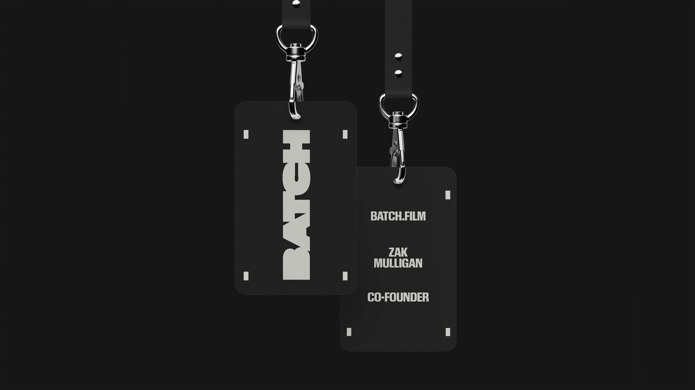
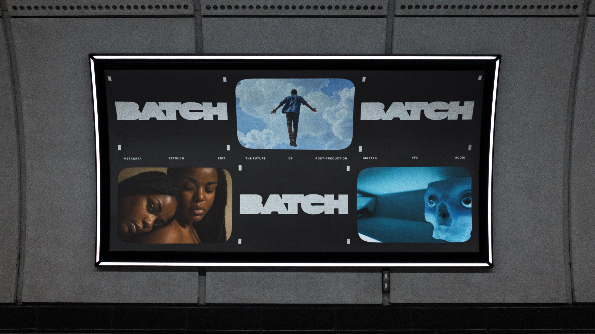
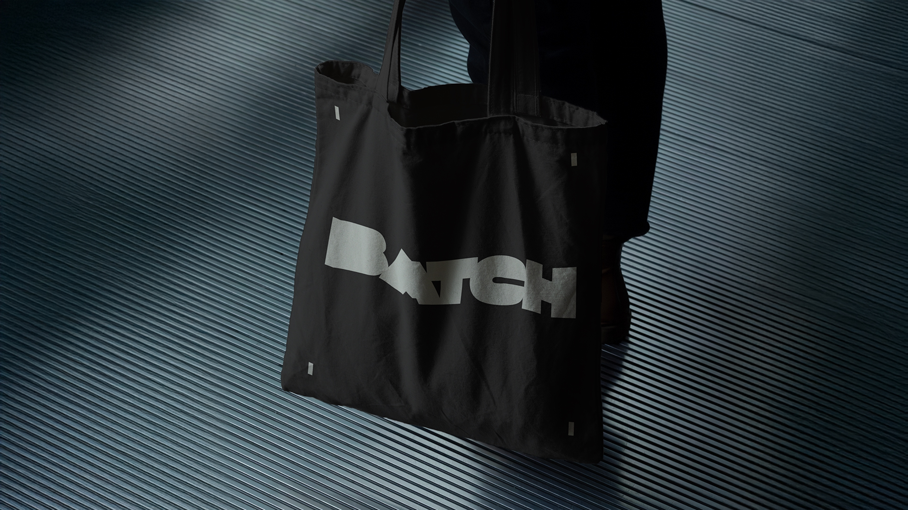

Jack Trego
Creative Producer
BATCH revolutionizes post-production for film & television through its patent-protected batch processing technology that can create mattes for an entire film in hours instead of months. Created by and for filmmakers, BATCH allows more time in color & vfx sessions for creative artistry. BATCH came to us to help with naming, branding, their demo video and website. We took inspiration from both the visual worlds of film & cinema and the concept of batch processing. The custom bold blocked logo is reminiscent of a matte created for film.
ClientBATCH: Zak Mulligan, Seth Ricart
Agency&Walsh
Creative DirectionJessica Walsh
Brand Strategy & CopywritingLauren Walsh, Jessica Walsh
Associate Creative DirectorLucas Luz
ProductionJack Trego
DesignJulia Miceli Pitta, Sasyk Mihal, Juanse Carvajal, Lucas Luz, Matthew Roop
Video & AnimationsIgor Fajardo, Matthew Roop, Julio Zukerman, Daniel Zepeda








